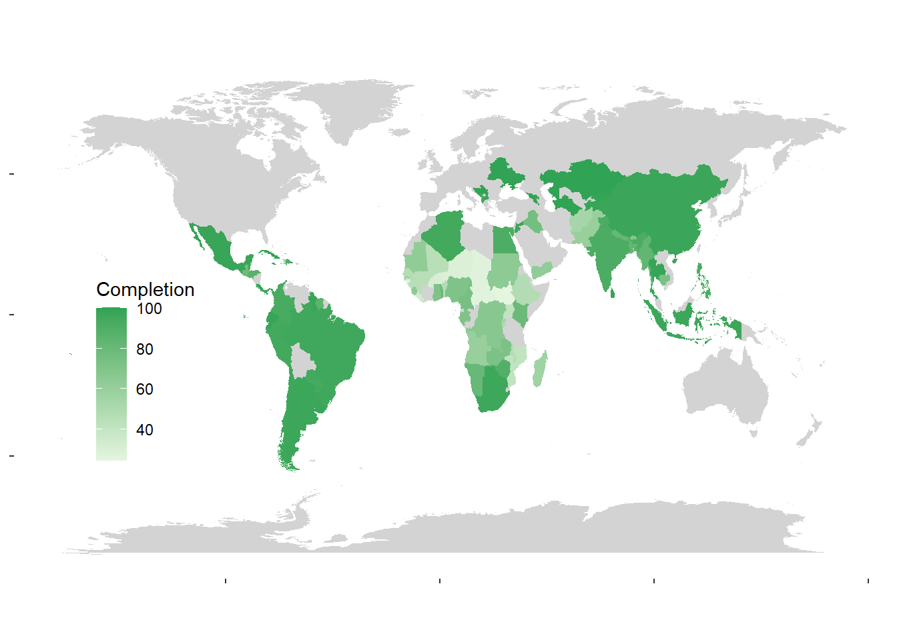
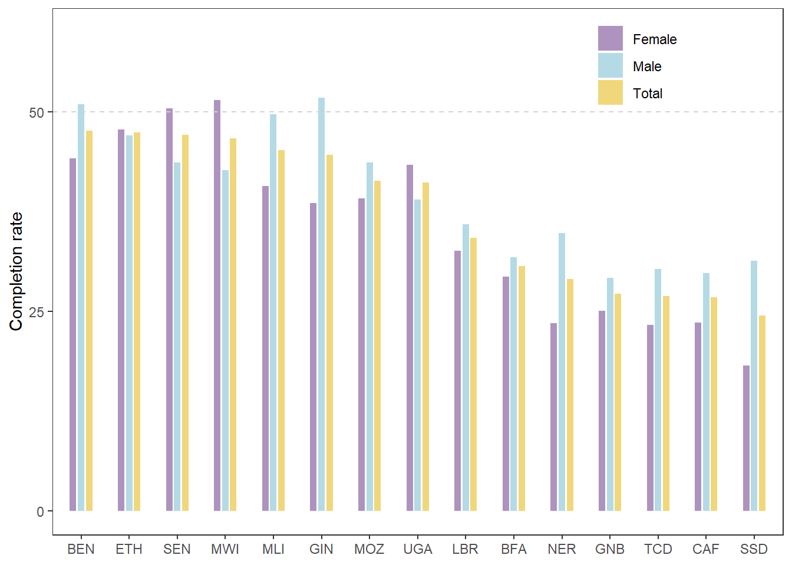
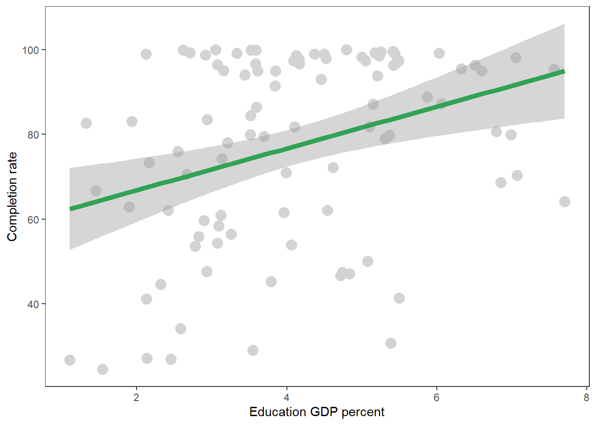
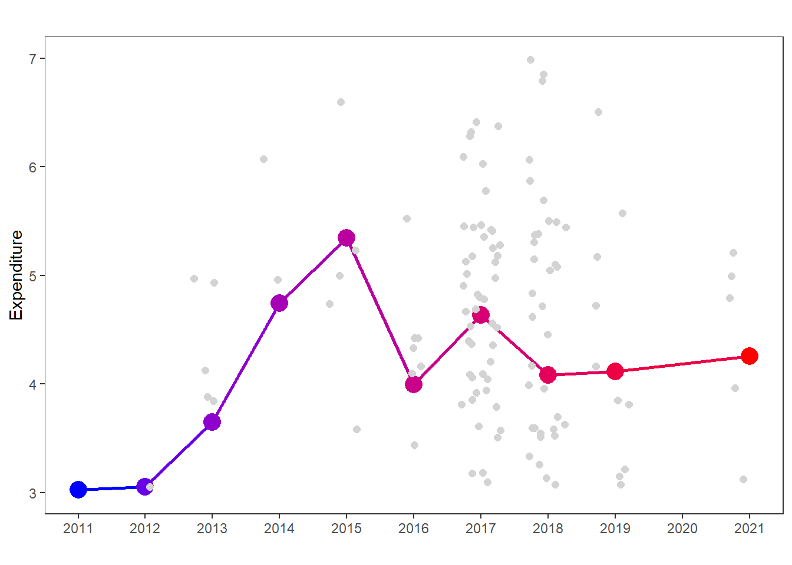

Children education
Introduction
For this report, two data were extracted from UNICEF Data Warehouse , first one is the completion rate of primary school age, second one is about the government expenditure of education. We try to explore the global pattern of children education, sUbsequently, we want to test the relationship between completion rate of primary school age and government expenditure on education.
Result
- Below is a global map describing the distribution of completion rate around the world, we could see that most districts have good educational conditions, while there are still many districts with poorly education in Africa (no data were found in gray parts).
- We also want to know how many regions where is still below 50% with bar plot. We found that there were still 15 regions below 50% (total). Moreover, female received a lower education proportion than male in these regions (11/15).

- We also want to know whether there was positive relationship between completion of primary school age and government expenditure, we did a regression plot between two variables (we did not consider year factor due to the limited data). From the figure, we could see that the grater GDP input could increase the completion rate of primary school age.

- We also want to explore whether government will increase their economic input for education in the future with time-series chart. We will calculate the average value for GDP percent, and then plot a time series chart from 2011 to 2021. We observed a significant increase in government expenditure from 2011 to 2015, and then it was stable.

Conclusion
We found that there was still many districts with poor education, and higher government expenditure could improve education quality effectively, while the expenditure was no longer increased during the last 10 years. All of these results call for government and stakeholders pay attention to children education quality problem.